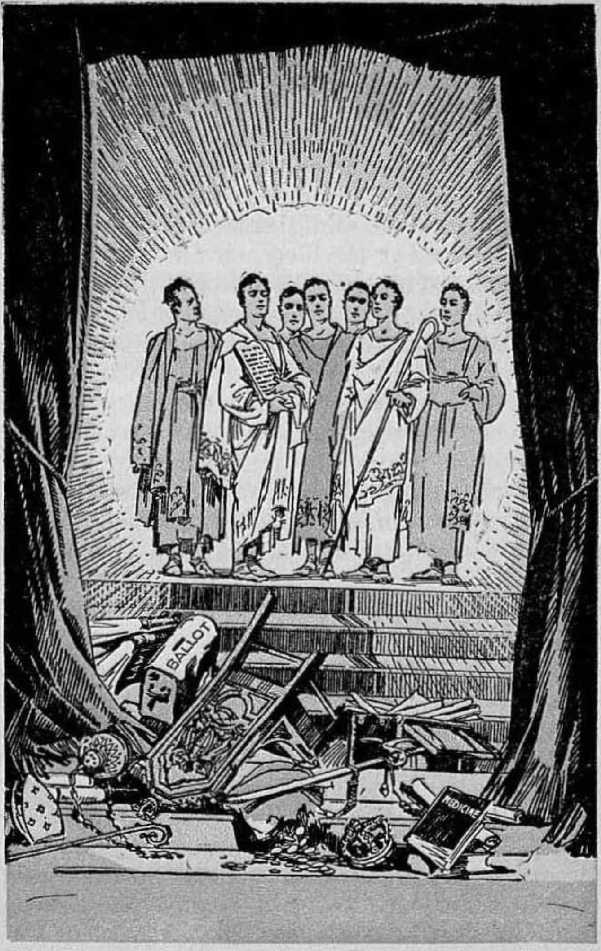

explained in Seven Bible Treatises by
J. F. RUTHERFORD
<06^
1-----------------------------------------------------------------------1.
Page
3 Earth’s New Rulers
12 The People's Greatest Need
20 The Kingdom
26 Comfort
38 In the Resurrection, Where Will You Be?
47 Jehovah’s Requirements
55 Prosperity
<---------------------------------------------1'
The Bible is, ns fully proved in Judge Rutherford’s books, more entertaining, more captivating in its simplicity and logic, nnd more astounding in its explanation of the destiny of the human race, than all other books written by men put together.
----<•
Copyrighted 1932 AND PUBLISHED BY WATCH TOWER BIBLE AND TRACT SOCIETY International Bible Students Association Brooklyn, N. Y„ U.S.A.
Branch Offices: London, Magdeburg, Paris, Toronto, Strathfield, Cape Town, Berne, Copenhagen, Stockholm, nnd other cities.
Made in U. S. A.
JESUS taught his followers to pray to Jehovah : “Thy kingdom come. Thy will be done in earth as it is in heaven.” Since then much has been said about the setting up of God’s kingdom on the earth. The most prominent teaching of the Bible is that concerning the kingdom of God on earth through which all the families of the earth shall bo blessed. How that kingdom is to be administered is a question that has puzzled many. The Scriptures plainly state that no man can ever see Jehovah, and also state that Christ Jesus is the express image of Jehovah God. It therefore follows that no man can ever see the divine Christ. This is conclusive proof that Christ will not appear before the peoples of earth as their visible ruler. How -then could the Lord establish his righteous rule or government upon the earth?
Many religionists have said that God has committed to the so-called “organized Christianity” the duty and obligation of converting the world and thereby establishing God’s kingdom on earth. Such claim is contrary to the Scriptures, and the facts well known to all prove that the effort of more than fifteen centuries in this behalf has completely failed, and that today there is more unrighteousness in the nations called "Christian” (han in any other part of the world.
In the centuries past mon have organized governments and tried to rule, but, being imperfect and selfish, they have failed. They have been both wittingly and unwittingly under the control of Satan. Therefore the Scriptures state that Satan the Devil is the invisible ruler or god of this world. Honest people of good will continue to select men Io the offices in the governments, thereby hoping to bring about righteousness. They have not succeeded and cannot succeed in thus establishing righteousness, for the reason that the organizations of earth are under Satan’s influence and control. Both prophecy and the physical facts prove that through his Son Jehovah will destroy Satan’s power and his organization, and then Christ will be in full control of the affairs of the world.
When Christ is the god of this world and in full control of its affairs, will the political organizations amongst men continue to select their officers to serve in the offices? Most emphatically, no! In Daniel 2:44 Jehovah says his kingdom will not be left to other people. That means that no one outside of Jehovah’s official organization will have anything to do with the ruling of the world. That truth alone should be a great comfort to all who have suffered under the oppression of unrighteous rulers. Imperfect men are all more or less selfish, and where selfishness exists a perfect and right
eons government cannot exist. The radical movements, such as Communism and Bolshevism, could never establish a desirable government, because these, like other organizations, are controlled by selfishness. The greater the ignorance and the greater the selfishness, the more unsatisfactory the rule or government. It must be apparent to all who think that no men now on earth could establish and carry on a righteous government. With keenest interest, therefore, every thoughtful person should give heed to the manner in which Jehovah will establish a righteous government amongst men. These truths are plainly stated in the Bible. Briefly I call your attention to them. The full details and the Scriptural proof appear in books explaining the Bible, which you should carefully study, together with your Bible.
The time from the ascension of Jesus Christ into heaven to his kingdom is employed in selecting from amongst men those very few who wholly devote themselves to God. These are selected and distinctly separate themselves from the world and constitute the true followers of Christ. Continuing faithful until the end, in due time they will be for ever with Christ Jesus in heaven and, like him, invisible to human eyes. They will not be seen as having to do with any of the affairs of the earth.
Be reminded now that several thousand years before the crucifixion of Jesus Christ good men lived on the earth. From the time of Eden until the first coming of Christ there were a few men who refused to yield to the influence of the Devil. They stood steadfast for Jehovah God at all times. They are designated in the Scriptures as faithful men, because they were faithful to God. For that reason they received God's approval. At the time Jesus Christ was on earth all of those faithful men bad died, except -John the Baptist; but John was killed before the crucifixion of Jesus. In Matthew, chapter eleven, it is recorded that Jesus plainly said that John the Baptist would never be in heaven. In John 3:13 Jesus said that none of these faithful men who had died have gone to heaven. The reason is that the heavenly way for man was never available until after the resurrection of Christ Jesus and his ascension into heaven. He must be and is the first, and has preeminence over all others.
The Scriptures then in plain terms state that Jehovah God has provided a place for these faithful men who died prior to the coming of Jesus, and that their place will be better than that to be held by other men. In the eleventh chapter of Hebrews a number of men are mentioned by name. The list begins with Abel, and then follow the names of Enoch, Noah, Abraham, Isaac, Moses, Samuel, David, Barak, and all of God’s holy prophets. Those men separated themselves from worldly matters and devoted themselves wholly to God. Concerning them il is written, in Hebrews 11:16, that they desired a better government, that is, an heavenly government or kingdom. “Wherefore God is not ashamed to be called their God; for he hath prepared for them a city.” That means a place in his righteous government. All these men, says the divine record, died faithful, but without having received that which God had promised. The reason they did not receive it before their death was that it was not yet God’s due time. Then the Scriptures state that with the complete selection of the members of the body of Christ those faithful mon mentioned shall he made perfect and have their place in God’s organization.
How can they be made perfect? Early in the reign of Christ, as it is written, he shall judge the dead as well as the living. The dead must be resurrected or awakened out of death, This is in accord with the statement of Jesus, in John, chapter five, that all those who died as “good” will be brought up in the resurrection of the dead and to life. These faithful men died when good, and the Lord will raise them up out of death as perfect men.
Again, be reminded that the Bible tells that these faithful men were long known as the “fathers” in Israel. The nation of Israel for many years constituted God's chosen people, and these faithful and true men stood out prominently as the fathers or leaders of that nation. The Scriptures make plain what will be the position of these faithful men in the kingdom of God under Christ. In Psalm 45:16 it is written: “Instead of thy fathers shall be thy children, whom thou mayest make princes in all the earth.” All who will ever get life will receive it from Jehovah through Jesus Christ, and for that reason Christ the Messiah is spoken of by the Prophet Isaiah as “the everlasting Father”. When he resurrects these faithful men from death and brings them back to the earth as perfect men, they will be properly called his “children”. This prophecy, therefore, shows that Christ the King will make those faithful men the princes or visible rulers in all the earth.
That means that soon you may expect to see Abraham, Enoch, Moses, David and all of these other faithful men back on earth. They will not appear with old and wrinkled faces, nor with long flowing, white beards. They will be brought back in the vigor of young manhood, strong and energetic, clear of vision, and brilliant of mind. Being wholly devoted to the Lord and under the control and supervision of the Lord, and the visible representatives of the great King on earth, they will do exactly that which is right. It is therefore written, in Isaiah 32:1: “Behold, a king shall reign in righteousness, and princes shall rule in judgment.” Christ Jesus is the King, and his reign shall be righteous; and these faithful princes or representatives on the earth will carry out his judgments or decrees, and the entire rule or government will bo righteous. Those men will be the visible governors
Earth’s new rulers
Page 8
of the nations of earth and the people will soon learn to respect, love and obey them.
It will be impossible for anyone to unduly influence them, and bribes will be wholly unknown. The government will be pure. The only purpose of these men will be to carry into action the decrees of the great and righteous King, Christ Jesus. Concerning the blessings the people shall enjoy under their reign it is written, in Psalm 72: 6-8: “He shall come down like rain upon the mown grass; as showers that water the earth.
• In his days shall the righteous flourish; and abundance of peace so long as the moon enclur-etli. He shall have dominion also from sea to sea, and from the river unto the ends of the earth.”
Jehovah said to Abraham: “In thy seed shall all the nations of the earth be blessed.” God always performs his promises, and in his due time all the nations of the earth shall have his blessing. One of the inspired writers of the Bible, called Peter, knowing and relying upon this promise of Jehovah, wrote, in 2 Peter 3:13: "We, according to his promise, look for new heavens and a new earth, wherein dwelleth righteousness.” Peter constituted one of the 'seed according to the promise, which seed is Christ’ and constitutes the kingdom or sovereign power and for that reason is called the 'new heaven’ or invisible ruling power. The “new earth” means the new organization of men on earth, that is to say, that government or organization which is seen by men and which rules amongst men. The promise of God is specifically that the new heavens and new earth shall rule in righteousness. The judgment of the Lord, the King, will then be in the earth. As to the effect that will have upon the people it is written, in Isaiah 26:9: ‘When thy judgments are in the earth, the inhabitants of the world will learn righteousness.”
Everybody knows that it is impossible for the people to learn righteousness under the present forms of government. Why then should we longer follow blind leaders in their vain efforts to accomplish the impossible? It must be apparent to all sober-minded persons that God's remedy for human ills, and his method for establishing righteousness in the earth, is the only possible one. Therefore a knowledge of God is of vital importance to all. A book called Government deals at length with this question. The Bible texts bearing upon the matter are brought together so that anyone may carry on a private study of these great truths. This and kindrod books are being brought to your homes by men and women who love God and who want you to know about these marvelous things. There is no desire to have anyone join an organization. The only purpose is that the people may know and be acquainted with the truth for their own good, because the Lord has commanded that now the testimony must bo given.
When you consider the distressing conditions of the nations of earth you see no help that man can bring. When yon look to God’s Word yon see that things have come to pass exactly as God’s prophet foretold they would and that these facts are proof that we are now living in the great transition period when the oppressive organizations of earth are passing away and God’s righteous rule under Christ and his earthly representatives is coming in. Be of good courage now. Learn of the precious things God has provided for those who love righteousness, and you will be greatly blessed.
AMONG ALL peoples of the earth there is much distress. The masses are in dire need; many are sick and afflicted. Groat numbers are poverty-stricken, while there are millions without employment. These afflictions have brought bodily pain and mental anguish upon many. The greater number of the sufferers desire that they might have health and prosperity, with contentment and happiness. If there is any means provided whereby the people may have and receive these very things they desire, then all must concede that a knowledge of such means is of greatest importance to the people.
A man in the desert is dying from thirst and may be within a few rods of an abundance of sweet water; but if he has no knowledge of the
THE PEOPLE’S GREATEST NEED 13 water’s being there he could have no relief. Jehovah God has provided a way for the people to have life everlasting, together with all the blessings incident thereto, including health, prosperity, and endless happiness. Jesus Christ, the greatest teacher of the sons of men, said, in John 17:3: "This is life eternal that they might know thee the only true God, and Jesus Christ whom thou hast sent.” That great truth is not subject to a successful contradiction. At the same time it will be conceded that the masses of the people are without knowledge of God's gracious provision through Christ, and without knowledge such provision would be of no benefit. Who has prevented the people from obtaining such knowledge? The answer is found in 2 Corinthians, chapter four, in these words: 'Satan, the god of this world, has blinded the minds of them that have no knowledge, lest the light of the glorious good news should shine unto them? To accomplish his wicked purposes Satan, by fraud and deception, has induced the people to believe many false doctrines. Blindness to the truth is the result.
Iniquity means lawlessness. Therefore one who proceeds contrary to God’s law is a worker of iniquity, whether he knows it or not. In Psalm 53:4 Jehovah says: "Have the workers of iniquity no knowledge? who eat up my people as they eat bread; they have not called upon God.” Concerning the importance of a knowledge of God and his purposes it is written, in
Proverbs 8:10,11: "Receive my instruction, and not silver; and knowledge rather than choice gold. For wisdom is better than rubies; and all the things that may be desired are not to be compared to it.” And in Proverbs 10:14: "Wise men lay up knowledge; but the mouth of the foolish is near destruction.”
A wise man is one who learns of God’s purposes and then conforms himself to God's law. Until a fixed and certain time God has not interfered with Satan ; but now his duo time has come to drive Satan and his organization out of existence. God has always had some witness on the earth; but now, because we are at the end of Satan’s world. Jehovah has commanded that there shall be a campaign of education carried on amongst the people to the end that the people may have an opportunity to gain a knowledge of his gracious provision for their relief. The greatest time of trouble the world has ever known is just ahead, and before it falls upon the world Jehovah will have a vigorous testimony given that the people may be informed of the truth. For this very purpose men and women are going about the country, presenting to the people books that show where these truths are to be found in the Bible. The indisputable facts show that the greatest present need of the people is a knowledge of what truth is contained in the Bible. When they understand the truth they can see which course to go in in order that they may best conserve their own interests. To
THE PEOPLE’S GREATEST NEED 15 uphold some religion is of no importance, but to gain a knowledge of God’s provision for man and his complete remedy for the ills of humankind is of greatest importance. If you have an opportunity to avail yourself of an understanding of the Bible, see to it that you take advantage of that opportunity.
Every good thing is born amidst opposition and tribulation, because Satan opposes everything that is good. There is great opposition to this campaign of education. What the people must do is to get a knowledge of what the Bible teaches and they will understand the reason for the opposition and what course they must take. Satan has no power to give life and happiness to mankind. No organization of men can bring relief to the people. Jehovah God is the fountain of everlasting life. He provides life and blessings incident thereto as a gracious gift for man. There is no other way to get these blessings. No one, however, can receive this gracious gift without a knowledge of the giver and of the gift. In Romans 6: 23 it is written that life is the gift of God through Jesus Christ our Lord. If men are to receive this great gift they must know how and when the gift is available; and that knowledge is contained in the Bible.
All the human race came under condemnation because of Adam’s sin. The sacrifice of the man Christ Jesus provides redemption or salvation for all, but all must first have a knowledge of this provision and then accept or reject it.
Therefore it is written, in 1 Timothy 2; 3-6: "For this is good and acceptable in the sight of God onr Saviour; who will have all men to be saved, and to come unto the knowledge of the truth. For there is one God, and one mediator between God and men, the man Christ Jesus ; who gave himself a ransom for all, to be testified in due time.” The philosophy of the great ransom sacrifice and its application to the peoples of earth is fully explained in the book called Reconciliation, because it collects under the proper headings the scriptures which prove God’s purposes concerning the same.
The radio belongs to Jehovah God. Its use in modern time is not due to the increased wisdom of men. It is employed in these last days because it is God’s due time to inform the people. There was a time when the Bible was taught in the churches. That time has gone from the earth. Now the people may sit, in their homes and hear a brief explanation of some of the Bible truths and then, by using books as ' helps to Bible study, can gain the desired knowledge. In the twenty-fourth chapter of Matthew Jesus plainly foretold of the conditions that ■would exist upon earth at the end of the world and his second coming, which conditions we have seen about us during the past ten years. Then Jesus said: 'This good news shall be told to the peoples of the nations of the earth as a witness before the final end of Satan’s organization.’ That is why this testimony is given by
THE PEOPLE’S GREATEST NEED 17 radio and by books and by word of mouth. In brief, the good news is this:
That the great Creator of heaven and earth and of all things on the earth, including man, is Jehovah God; that Jesus Christ, the Son of God, is his great executive officer; that at the beginning Lucifer, now called Satan, was appointed the god or overlord of the world; that his treason and rebellion turned most of his organization against God and led the human race into degradation and death; that God promised that he would send a Redeemer for man who should redeem the human race and later be the Ruler of the world and rule in righteousness; that nineteen centuries ago Jesus came to earth and by his death and resurrection provided redemption for man; that from then until his second coming God has been selecting a few from amongst men to be his witnesses; that now Satan's time to operate, his rule without interference, has ended; that Christ is now earth’s rightful King and Ruler; that Satan has been ousted from heaven and confines his operations at this time to things pertaining to the earth; and that in the very near future his organization and power will be completely destroyed in a time of trouble such as the world has never known. Then shall follow the righteous reign of Christ, earth’s King, Christ will establish everlasting peace on earth and bring health and prosperity to the people, and those who obey his righteous law shall be restored to everlast-
ing life and dwell forever on earth in contentment and happiness.
Are not these things of such tremendous importance to the people that they are worthy of the most careful investigation by all? If these things are true, is not a knowledge thereof of more vital importance to the people just now than anything else could possibly be?
While it is true that a few of the people of earth have an abundance of money and property, yet they are not satisfied, healthy or happy. The masses have not sufficient food and raiment and they are in distress. If they had money and houses in abundance, still they would not be happy, because they have not vigorous health and they live but a short time. The present times of distress and the conditions about need sober consideration as to the reason.
A knowledge of the truth alone can satisfy the minds of men. The truth does not belong to any man. There is no man or organization of men on earth who promulgate any theory of salvation that is true. That which is true and stands as eternal as the Rock of Ages is God’s Word, and the greatest need of the people is to have a knowledge thereof. No one, therefore, who desires the blessings of life should permit any creature or organization of men to interfere with him in an effort to gain a knowledge of the truth.
But who will bring us a knowledge of the truth? Jehovah says concerning Christ, in
THE PEOPLE'S GREATEST NEED 19 Isaiah. 55:4: “Behold, I have given him for a witness to the people, a leader and commander to the people.” Again, by the same prophet Jehovah says: T have called thee in righteousness and will give thee to enlighten the nations and to open the blind eyes? These prophecies, without a question of doubt, refer to Christ. Then the Lord says to those who are wholly devoted to him and his cause, and who are in Christ and form a part of his “Servant”, that such constitute his witnesses upon the earth and the obligation is laid upon them to bring the truth to the people and point out from God’s Word what is the meaning of present conditions and what is about to come to pass. It is not necessary for anyone to know these persons by name, but if you find men and women who are unselfishly trying to teach the people that Jehovah is the only true God, and that Christ is his great executive officer and earth’s rightful King, and that the kingdom of God is at hand, and that it will bring relief to the people, then you may know that such persons constitute a part of the Servant or company of witnesses whom Jehovah has on the earth at this day. If such persons come to you to aid you, respectfully hear what they have to say and then do what you may desire. Jehovah Krill give you the opportunity to receive a knowledge of the truth, and, having this opportunity, the responsibility rests upon you.
The man who sincerely desires wisdom stands in awe. before the great Jehovah God and humbly asks to be instructed in the right way. As he learns of God and walks in the way of his teachings, he begins to grow wise. Concerning such it is written: "Happy is the man that find-eth wisdom, and the man that getteth understanding.” (Proverbs 3:13) Further the Lord’s Word says: "How much better is it to get wisdom than gold? and to get understanding rather to be chosen than silver?”—Proverbs 16:16.
Lasting peace and boundless prosperity, complete liberty and full happiness, vigorous health and everlasting life, are Jehovah's gracious gifts to the people through his kingdom. The transition period from the time of suffering to the time of blessings is here. The kingdom of God is at hand. Know Jehovah and Christ and receive the blessings of his kingdom.
JEHOVAH’S first great prophecy to man was of and concerning his kingdom. The truth of the Bible concerning the kingdom of God is the greatest of all truths. God has provided for such kingdom, to the end that all creation may have a full opportunity to hear and understand that he is the only true God, that his Word and name are true, and that he is the source of life and the Giver of every good and perfect thing.
Jehovah is the God of order, which means that from the beginning of creation he has had an organization among his creatures. That universal organization of God is mentioned in his Word under the symbol of “the woman”. Because of the rebellion of Satan many of God’s creatures became lawless. Satan defied Jehovah God and challenged God to put creatures on earth that would maintain their integrity and remain true and faithful to God under a severe test. God accepted the challenge and gave his word that his organization, “the woman,” would bring forth a seed that would bruise the head of Satan, meaning that this seed would destroy Satan and his organization. The language of his promise implies that there would be a great controversy between the promised seed and Satan and that the promised seed would triumph. That seed is otherwise designated in the Bible as the royal family or the kingdom.
God used faithful Abraham and his wife Sarah to picture his organization and the seed he would produce. Abraham was a type of God himself, while Sarah represented God’s universal organization, and their son Isaac pictured the promised seed. The language God employed in Genesis, chapters twelve and twenty-two, is this: “I will make of thee a great nation, and I will bless thee, and make thy name great; and thou shalt be a blessing: . . . and in thee shall all families of the earth be blessed. ... In thy seed shall all the nations of the earth be blessed.” In substance, the promise is that God would bring forth a seed which would constitute his kingdom and that this would vindicate his name and be his instrument for the abundant blessings of the peoples and nations of the earth. That promise is certain of complete fulfilment.
For centuries God used the nation of Israel to make moving and living pictures foretelling the kingdom that in due time he would bring into action. By all of his holy prophets lie gave his word that the kingdom would be set up. The people that trusted God, therefore, confidently expected the coining of a mighty king who would become the ruler of the world and bring relief and blessings to the people. Approximately 4000 years from Eden the babe was born at Bethlehem by the virgin Mary, and his name was called Jesus, meaning that he would be the Savior of the world. At the time of his birth God sent to the earth a company of holy angels, one of whom delivered to man this message: “Behold, I bring you good [news] of great joy which shall be to all people. For unto you is born this day, in the city of David, a Saviour, which is Christ the Lord.” This is proof that in God’s due time a knowledge of this mighty Son-of God shall bring gladness to the nations and peoples of the earth. On that occasion the company of angels sang together: “Glory to God in the highest, and on earth peace, good will toward men.” The babe Jesus is thus identified as the One whom God has selected as his King and Head of his kingdom. This is proof that, in God’s due time, through his beloved Son he will bring everlasting peace on earth and good will toward men.
The kingdom is called God’s kingdom because he is the one that produces it. It is called the Idngdom of heaven because the authority proceeds from heaven. It is called the Idngdom of Christ because Christ is the Head of that kingdom. Just preceding the time of his death Jesus said to his faithful disciples (Luke 22: 28, 29): fMy Father has made a covenant with me for the kingdom, and I covenant with you that you may be of that kingdom.’ This shows that God will have associated with Christ Jesus in his kingdom others who are taken from amongst men. The condition upon which these are granted a part in the kingdom is that they must be devoted entirely to God, be separate and distinct from the world, and prove themselves faithful unto God and unto Christ even unto death.
The only means whereby man could be released from the penalty of death was by and through the death of another perfect man as a substitute for Adam. The perfect man Jesus, by dying, provided the redemptive price. God raised up Jesus out of death, not as a man, but as a creature, divine, and clothed him with power and authority in heaven and in earth and made him the Head of his new organization, designated as the kingdom. This great truth is briefly summed up in Philippians 2: 8-11: "And being found in fashion as a man, he humbled himself, and became obedient unto death, even the death of the cross. Wherefore God also hath highly exalted him, and given him a name which is above every name; that at the name of Jesus every knee should bow, of things in heaven, and things in earth, and things under the earth; and that every tongue should confess that Jesus Christ is Lord, to the glory of God the Father.”
The Scriptures are explicit in the statement that no human creature can be of the kingdom of God. It is the spirit creature divine, Christ Jesus, who is the King; and those who are associated with him must be made of a like nature. The King will always be invisible to men, but he will have his visible representatives on the earth who will carry out his orders to the glory of God for the good of mankind. Those who will be associated with Christ Jesus in the heavenly kingdom, being like him, will also be invisible to man.
If a man ever becomes a member of the kingdom he must attain to that great position in the way God has provided. That way is to follow in the footsteps of Jesus. The man must believe in Christ as his Redeemer and devote himself entirely to the doing of God's will. Being brought forth as a son of God he must then be faithful and true to God and to Christ in the performance of his covenant, even unto his death. He must die as a man and be raised up out of death by the Lord as a spirit creature. For this reason it is written, in 1 Corinthians 15:49, concerning those who are the followers of Christ: “And as we have borne the image of the earthy, we shall also bear the image of the heavenly?’
Why was Jesus on the earth for more than three years after God had made a covenant with him for the kingdom? The chief reason was that he might give testimony concerning God’s purpose of establishing a kingdom. Creatures cannot be obedient to God unless they have knowledge of his purposes. Jesus laid the foundation of the knowledge of and concerning the kingdom. In the very beginning of his ministry he preached to the people concerning the Idngdom of God, and thus he faithfully continued to do while on earth. He stated that he did so because it was the will of God his Father.
At the conclusion of his ministry and when he stood accused before the Roman governor, Jesus admitted that he is the King, but emphasized the necessity of first bearing witness to the truth. His language on that occasion was (John 18:37): “To this end was I born, and for this cause came I into the world, that I should bear witness unto the truth.”
Furthermore, Jesus told his disciples that no one could ever be a member of the kingdom unless he brings forth the fruits of the kingdom.
(Matthew 21:43) The fruits of the kingdom consist of God’s Word, which gives and sustains • life. Only those who abide in Christ and who continue faithfully to bring forth such fruits of the kingdom to the glory of God will be in the kingdom. Jesus told his followers that he was going away to prepare a place for them, which place is in the kingdom, and that he would return and receive them unto himself. However, he charged his followers with performing, in his absence, the obligation of bearing witness or giving testimony concerning the kingdom of God.
God caused his prophet Isaiah to write a prophecy which has its application at his second coming, or the return of the Lord Jesus Christ, and the beginning of the kingdom. (Isaiah 9:6) “Unto us a son is given, and the government shall be upon his shoulder; and his name shall he called Wonderful Counsellor, The mighty God, The everlasting Father, The Prince of Peace.” This prophecy proves that the righteous government of the nations of earth must rest upon Jesus Christ the "King and that no lasting peace can come until his kingdom is in full sway, and that it is by and through the kingdom that peace, joy, happiness and the blessings of life shall come to the peoples of the earth.
The human creature is used to illustrate the kingdom class. It follows that the last members on earth of those who are in lino for the kingdom would constitute the feet of him the King, Hence it is written (Isaiah 52:7): “How beautiful upon the mountains are the feet of him that bringeth good tidings, that publisheth peace; that bringeth good tidings of good, that publisheth salvation; that saith unto Zion, Thy God reigneth!”
This and many other scriptures prove that at the second coming of Christ there must be on earth some who are faithfully telling the truth and bearing testimony concerning the Idngdom of God. The facts show that there is now a small company of men and women on earth who have full faith in God and his kingdom and who are wholly devoted to him. Daily these are going from house to house, telling the people of God's Idngdom and exhibiting to them books which explain the Scriptures and enable them to find in the Bible these great and vital truths. By this means they are preaching the gospel of the kingdom in obedience to the commandments of the Lord. Among the books containing this message of comfort and heart-cheer is the book called Government, which sets forth in detail God’s promise and expressed purpose of bringing into operation his great kingdom that will relieve and bless the people. That information is now of vital importance to everyone. There is no other means given whereby peace, happiness? and life can be brought to the people. It is God’s way, and it is the right and true way. It is the w7ill of God that the people shall have a knowledge of these truths; therefore he commands the followers of Christ Jesus to be fearless and faithful in this day in giving this message of truth as a testimony to the people. That is the reason men and women are now going to the homes with these books. They do not want to induce you to join something. They only want to aid you in getting a knowledge of the truth.
Only those who are faithful in obeying God’s commandments to be his w’itnesses will ever be in the kingdom of God. To the faithful followers of Christ Jesus is committed the work of delivering this message of truth to the people at the present time. In doing it they are subject to much reproach by those who oppose the kingdom. Regardless of the opposition and reproach they must continue to be faithful to the end. They must overcome the world by their faith and faithfulness to God and to Christ. To such the Lord says (Revelation 3: 21) : “To him that overcometh will I grant to sit with me in my throne, even as I also overcame, and am set down with my Father in his throne.”
Now the kingdom of God is at hand. Already Satan has been cast out of heaven and is now directing all his forces against God and his organization on the earth. That is the reason there is now so much suffering and distress in the world. Soon Satan will be ousted from the earth, and Christ, as God’s great Executive Officer, will be in full charge of earth’s affairs, and then the people will receive complete relief, and all who then give their allegiance and devotion to
God and his kingdom will be blessed with everlasting life upon the earth.
JEHOVAH’S WORD, which is the Bible, was written for the comfort of those who love righteousness. There is much distress and suffering in the world. The burdens of the people are both physical and mental. Some Christians become discouraged and for a time are bowed down in sorrow, Millions of professed Christians are suffering from various causes. All need comfort, and few are they who know where to find it. One in sorrow and distress longs for comfort, even as the man with the parched throat in a burning desert craves refreshing water.
Comfort means good cheer, consolation, and peace of mind. Today the peoples of earth are face to face with an unhappy condition. The millions that are in distress receive no comfort from what they read in the public press. If they go to the church houses they receive no comfort there, because they hear not about God’s purposes to bless the people, but hear practically what they read in the press concerning worldly affairs. The ruling classes are uncomfortable themselves and are unable to bring consolation to the people. Regardless of position or situa-lion all are suffering from sickness, both mental and physical, and death stares them in the face. It is not within the power of men or organizations of men to bring consolation to suffering humanity.
Shall the people then give up in despair? No. The extremity of the creature is the opportunity to receive that which is provided by the gracious Creator. Jehovah God is the Giver of every good thing, and his treasure-house knows no bounds. In 2 Corinthians of his Word it is written: “Blessed be God, even the Father of our Lord Jesus Christ, the Father of mercies, and the God of all comfort; who comforteth us in all our tribulation, that we may be able to comfort them which are in any trouble, by the comfort wherewith we ourselves are comforted of God.” Those who look to God for comfort will find it. A knowledge of what Jehovah has in store for those who desire righteousness is certain to bring consolation.
Physical weakness and sickness result from want of material food. When proper food is taken the body is refreshed. Mental depression and suffering result from want of proper food for the mind. The Christian is strengthened and consoled by the upbuilding of the mind. God’s prophet wrote, in Psalm 119:50: “This is my comfort in my affliction; for thy word hath quickened me.” No Christian can sustain his spiritual life without proper food and exercise. His meat and drink is the Word of God, and
his exercise is the proper use. of the knowledge of that Word.
The Scriptures say that Jehovah is the Father of mercies and the God of all comfort. That means that he is the source of all consolation. He comforts those who seek knowledge and wisdom at his hand. Why does God give comfort to those who ascertain and do his will? Is it solely for their self-benefit? No; the Scriptures answer, God comforts us in all our tribulation, that we may be able to comfort them who are in trouble, with the comfort wherewith we ourselves are consoled of God. That means that when one receives a knowledge of God’s truth, it is his privilege and duty to tell others about it that they too may receive consolation. The commission of the Christian is to do that very thing*, and therefore it is written: ‘The spirit of the Lord God is upon me; because the Lord hath anointed me to tell the good news unto the. teachable; he hath sent me to bind up the broken-hearted, and to comfort all that mourn/ In obedience to this command there is a company of men and women giving what time they can to call upon the people at their homes in an effort to help them get an understanding of God’s purposes to bring complete relief and blessings to suffering humanity. Instead of spending much time at each home they bring to you the message in book form that you may sit down with your Bible and learn what you really desire to know.
There are millions of people in the land who make no pretense of being members of any church and who never attend, but who are orderloving and desire to see righteousness amongst men. They are in great need of comfort. They see that no organization amongst men can bring what they desire. Reasonable people know that all the ills that affect the nation cannot be laid upon one political party and that there must be some greater reason for the unhappy conditions. It is true that a party in power might do some better things for the people, but no organization of the world can bring to the people peace and consolation. The reason for this is that Satan the Devil is the god of this world and all nations of the world are now dominated by his influence. What, then, will Jehovah, the God of all comfort, do about it? The answer to this question is exactly the information that the company of witnesses that call at your homes are trying to convey to the people. In brief, I cite you something thereof.
For many centuries Satan the Devil has been the invisible ruler of the world. He has defrauded and misled the rulers and has caused great oppression to come upon the people. God’s time has now come to interfere and to bring relief. He has not interfered sooner, because it was not his due time so to do. The sufferings of mankind are due to no fault of Jehovah. Sickness and death have been upon the human race because of sin committed by the first man and the effects of which were inherited by all men. In proof of this it is written, in Romans, chapter five, that by the disobedience of one man sin entered into the'world and thereby all men became sinners. In obedience to God, Jesus by his death and resurrection provided redemption from death for the human race. When his kingdom is in full operation he will completely remove sin and death and the effects thereof and will bring health and happiness to all those who obey him. It is written that life eternal is the gift of God through Jesus Christ our Lord. In 1 Corinthians 15:25, 26 it is written : 'Christ must reign until he hath put all enemies under his feet; and the last enemy to be destroyed is death? Of course, the people that have life will then have health, because the promise given by the Lord through his prophet Jeremiah, in chapter 33: 6, is: "Behold, I will bring it health and cure, and I will cure them, and will reveal unto them the abundance of peace and truth.” Those who obey will receive both health and life, and then there will he no more death; the proof of which is given in Revelation 21 : 4: "God shall wipe away all tears from their eyes; and there shall be no more death, neither sorrow, nor crying, neither shall there be any more pain; for the former things are passed away.”
But when will these blessings come to the’ people? They will come by and through the government of God under Christ, which time is just beginning. Long ago Jehovah appointed Christ Jesus to be the Ruler o£ the world and declared that until his coming reign he would not interfere with men’s taking their own course. The due time has now come when God has put his beloved Son in authority. Already he has ousted Satan from heaven and soon he will completely destroy Iris rule in the world, and then the blessings will begin to come to the people.
Bear in mind always that God has plainly stated through his prophet (Isaiah 45) that he created the earth for man and man for the earth, and that in due time perfect men shall inhabit the earth. He has given his Word of promise that by and through his kingdom all the families and nations of the earth shall be blessed. He is absolutely certain to fulfil these promises, and in assurance thereof, through his prophet (Isaiah 46:11), he says: “I have spoken it, I will also bring it to pass; I have purposed it, I will also do it.” It is impossible for men by their own efforts to make the earth a fit place to live in happiness. Such is God’s work, and that he will do; and all men who obey the Lord and conform their course of action to his law will receive the blessings of his kingdom in fullness.
Satan the great enemy of man has induced the teaching of false doctrines to the people. He has made them believe that the dead are not dead, but in purgatory or eternal torment. These horrible doctrines have turned many honest men away from God. It is a real comfort to know that your dead friends are not in purgatory, nor in eternal torment. The Scriptures plainly teach that the dead are unconscious, out of existence, know not anything, and are therefore not undergoing suffering. In 2 Timothy, chapter four, is the proof that at the second coming of Christ and his kingdom he will grant a trial to all the living and the dead, that they may have an opportunity to obey righteousness and live. In order to grant this privilege to the dead they must be resurrected. In harmony with this Jesus stated, in John, chapter five, that in due time all in their graves shall come forth for judgment. In Acts 17:31 the proof is given that the entire human race shall have the privilege of a trial in the time, of righteous rule and when the forces of wickedness cannot interfere.
Under the rule of Christ oppressive corporations will not exist. The people will not be misrepresented by selfish politicians nor deceived by false teachers. The world will be ruled by the righteous law of Christ; and when his judgments are in full sway, the people will learn righteousness and rejoice. We are now in the period of transition from the reign of wickedness under Satan to the reign of righteousness under Christ. The new kingdom is being brought in under conditions of stress. Therefore the people are subjected to many things that now bring sorrow.
Under the righteous reign of Christ there will be no tramps and no long lines of men and women waiting to be fed by the hand of charity. Sickness and death will rapidly pass away and be supplanted by health and life and happiness. Such assurances are given to the people from God’s Word, and it is written for their consolation in this time of stress. His prophet Isaiah, in chapter 25:6-9, says: “And in this [kingdom] shall the Lord of hosts make unto all people a feast of fat things, a feast of wines on the lees, of fat things full of marrow, of wines on the lees well refined. And he will destroy in this [kingdom] the face of the covering cast over all people, and the vail that is spread over all nations, He will swallow up death in victory; and the Lord God will wipe away tears from off all faces; and the rebuke of his people shall he take away from off all the earth; for the Lord hath spoken it. And it shall be said in that day, Lo, this is our God; we have waited for him, and he will save us; this is the Lord; we have waited for him, we will be glad and rejoice in his salvation.”
Briefly, that scripture means that the Lord will provide an abundance of food for ah and that everyone who will do right will share equally therein. In his government no one will be permitted to deceive another. There will be no inducement to practice fraud or deception. The one who lias spread darkness over the nations will be completely removed. The living ones on earth will he restored to perfection of body and mind. Their beloved dead will be brought back from the grave with full opportunity to obey and live. The tears of bitterness that now fall upon many cheeks will be taken away, and the people shall dwell together in peace and contentment. For many centuries every one who has earnestly served God has been the object of rebuke by those who do not love God. That condition will be entirely changed. All will come to know God, from the least to the greatest, and will recognize that it is a great privilege, as well as a duty, to obey and serve God and honor his name. The peoples of earth will then be completely consoled and will say to each other: 'That is exactly what we have long waited for, and now we have received it at the hands of our gracious God?
If these things I have related are true, you will readily admit that they will bring comfort to those who believe them. They are true beyond any question of doubt. A knowledge of these truths will lift great burdens from suffering humanity now and will enable them to bear with patience present ills, well knowing that they are on the right course and soon complete relief will come. If you get comfort from those truths, then tell your neighbors about them, that they too may receive consolation. Knowledge, wisdom, comfort and life proceed from Jehovah God.—Proverbs 3:13,14.
THERE are times in the existence of every sober-minded man that he meditates upon what will be his eternal destiny. Life is the dearest thing to him, because without life he can enjoy nothing. Feeling disease in his flesh and bones he sees death staring him in the face. If there is a way for him to learn the possibility of the future, he desires to know it. He goes to some church house and hears the clergyman say that all who are faithful church members will at death go immediately to heaven, while those who are evil or wicked or out of harmony with the church when they die go immediately to torment that is eternal. The man seeking the truth goes away from that place sadly disappointed; and well he should be, because the statements he has heard made by the clergyman are not true.
Now let us go to the Bible testimony, where a satisfactory answer to the questions will be found. The death and resurrection of Jesus Christ the Scriptures declare is a complete guarantee that God in his due time will call forth the dead from their graves and give all an opportunity for life. The question then arises, If all are obedient to God, will all these be taken to heaven? The Scriptures answer, 38
IN T IE RESURRECTION, WHERE WILL YOU BE? 39 No. Now, by learning what the Bible plainly teaches you will be enabled to determine where yon may be in the resurrection.
Fifty days after the resurrection of Jesus Christ is known as Pentecost. That marks the time when the way was opened, making it possible for man to he taken to heaven. Prior to the resurrection of Jesus no man ever went to heaven, as Jesus plainly testified in John 3:13. At Pentecost God began the selection of a class of men who voluntarily became the footstep followers of Jesus Christ. To this end the Lord sent his disciples about to preach concerning the death and resurrection of Christ and his second coming and the kingdom that would then be set up. There was no effort made by these faithful disciples to convert the world, because God did not commission or authorize them so to do. They understood that from that time until the second coming of Christ the work of his followers would be to preach the truth of and concerning the kingdom and that such preaching would result in taking out from amongst men a small company that would be witnesses to the name and Word of God. They learned from Jesus, as the testimony is set forth in Revelation, chapter seven, that the number thus taken from amongst men and that would form the kingdom would be limited to 144,000. For this reason Jesus spoke of such as a 'Tittle flock”. Jesus said that God had promised him the kingdom, and he invited his faithful fol-
lowers to share with him that kingdom. In Luke 12: 32, he said: “Fear not, little flock; for it is your Father's good pleasure to give you the kingdom.” Jesus plainly told his followers that at his second coming he would establish this kingdom and then they should share with him everything, and until that time they must wait.
In support of this conclusion Paul, after years of faithful service, said, at 2 Timothy 4: 7, 8: "I have fought a good light, I have finished my course, I have kept the faith: henceforth there is laid up for me a crown of righteousness, which the Lord, the righteous judge, shall give me at that day; and not to me only, but unto all them also that love his appearing.* That which is made prominent in this text is this, that no Christian could receive his reward until the second coming of Christ, and then only upon condition that he had been faithful unto death. In harmony with this Jesus said to his followers, in Revelation 2:10: “Be thou faithful unto death, and 1 will give thee a crown of life.”
At once it is apparent that these texts do not apply to the peoples of earth in general, but that their application is limited to those who are faithful Christians and who continue faithfully devoted to God and to Christ unto death. It is at the resurrection that these receive their reward. Where, then, will they be in the resurrection? The answer is found in Revelation, chapter twenty, wherein it is stated that these IN THE RESURRECTION, WHERE WILL YOU BE? 41 shall have part in the chief resurrection and be for ever with the Lord in heaven. Verse six reads: “Blessed and holy is he that hath part in the first resurrection; on such the second death hath no power, but they shall be priests of God and of Christ, and shall reign with him a thousand years.” Sharing with Christ Jesus in his kingdom, is the reward for these faithful ones. That means that while they are on earth they must be fully devoted to God and to Christ and give their allegiance and service to God, and at the resurrection they will be taken to heaven. It is quite apparent that the preachers have misled the people by telling them that all good church members go to heaven at death.
The clergy have also misled the people concerning those who do not go to heaven. No one goes to eternal torment, because God makes no provision for such a place. Torment is wholly repugnant to justice and love, and therefore impossible with Jehovah. He declares by his prophet Jeremiah that such a wicked thing never entered his mind. Eternal torment is a theory advanced by the Devil.
Is it not the duty of the faithful followers of Christ while on earth to attempt to convert the world and get all the souls they can into heaven? No; such doctrine is another delusion advanced by the Devil to deceive mon. Let the Scriptures, at Acts, chapter fifteen, answer why God has selected the few whom he takes to heaven. I quote.: “God at the first did visit the [nations] to take out of them a people for his name. And to this agree the words of the prophets, as it is written: After this I will return, . . . that the residue of men might seek after the Lord.”
No one can seek after the Lord until he receives some knowledge concerning the Lord. There are billions of heathen who never heard of the name of God and Christ and who died totally ignorant concerning God’s provision for salvation. There are billions of people who have lived in the land of "Christendom” and had no knowledge of God's provisions concerning their salvation. There are millions of people now on earth entirely ignorant of such gracious provision. All of these must be given a knowledge of the truth, because that is the plain statement of the Bible.
Speaking now of such as are dead and in ignorance Jesus said: 'The hour is coming, in which all in their graves shall be brought forth; they that have done good, unto a resurrection of life, and the others, to the resurrection of judgment.’ There could be no judgment without a trial, and no trial without knowledge by the one on trial. Therefore all the heathen must be first given a knowledge of the truth and thus have an opportunity to accept or refuse it. Will any of these have an opportunity to go to heaven? No, for the reason that with the full establishment of the kingdom of God there will be no more taken into heaven. What, then, will IN THE RESURRECTION, WHERE WILL YOU BE? 43 be the opportunity of these for the blessings of life? Where can they possibly bo in the day of the resurrection and judgment?
In the prophecy of Isaiah, chapter forty-five, the statement is made from Jehovah: '1 have made the earth, and created man upon it. Thus saith Jehovah God himself, (hat formed the earth, and made it, he created it not in vain, ho formed it to be inhabited’; and in fsainh Hi: 11 he says: fT have purposed it, I wilkalso do it.” These statements of Jehovah are clear and positive, and about the fulfilment thereof (hero cannot be the slightest doubt. Ho has provided the earth for man’s place of eternal residence. God created the earth and then created man for the earth. He gave man the right to live upon it upon condition of complete obedience.
Satan led man into rebellion and death, and for that reason man lost his right to life upon the earth. The voluntary sacrifice of Jesus Christ purchased for man all such rights, and these the Lord will give to him in due lime. Such is God’s loving provision for man. He will give mankind the right to live on earth, and to I Im I. end affords him a trial and a judgment. Por that reason the statement is made, in Romans, chapter six, that life everlasting for man is the gift frorii God through Jesus Christ. Men who have no knowledge of that gift could not acre pt, and therefore they must first be brought Io a knowledge of the gift.
God never promised that all men should go to heaven. On the contrary, the heavenly reward is only for those who become faithful and true followers of Jesus between Pentecost and the time of the setting up of the kingdom. Now the second coming of Christ and the kingdom are at hand. The selection of the true Christians is about completed, and soon the blessings of the people will begin. What are the blessings they shall receive?
Acts 3 :20, 21 gives the answer in these words: 'The Lord God shall send Jesus Christ, whom the heaven must receive until the times of restoration of all things spoken by the mouth of all the holy prophets since the world began.’ It therefore follows that the restitution means that all mankind, aside from those who are taken to heaven, will have an opportunity to be restored to perfect manhood and to live on the earth forever. The book Deliverance explains the cause of man’s great loss and suffering, his redemption, his resurrection and complete deliverance. You should supply yourself with that Bible help and learn where to find all these texts proving these great truths. The book is brought to you by those men and women who go from place to place to help the people understand the Scriptures.
Concerning those who are resurrected the Prophet Isaiah, in chapter 35:10, wrote: “And the ransomed of the Lord shall return, and come to Zion with songs, and everlasting joy upon
IN THE RESURRECTION, WHERE WILL YOU BE? 45 their heads: they shall obtain joy and gladness, and sorrow and sighing shall flee away.”
"Zion” means God’s great organization, and “the ransomed of the Lord” includes all mon, because Jesus died for the benefit of all. As though a veil had been spread over the faces of the people, so that they could not see, they have thus been kept blind to the truth. God through his prophet, in Isaiah, ehnptei (wenly-five, says that it shall come to pass when Ilie kingdom is in full sway that he will destroy this veil or covering from the face of the people that they may know the truth. Then he will swallow up death in victory, and the Lord God will wipe away all tears from off all faces, and the rebuke of his people shall be taken away from off the earth. Plainly this scripture teach es that during the kingdom the obedient ones shall be given life and all the blessings incident thereto and that they shall live on the earth.
Now selfishness rules the world. Alen arc in doubt of each other, and dishonesty and nn righteousness are common amongst all peoples Such will not he possible in the kingdom. In Isaiah 26: 9 the statement is that when I ho judgments of the Lord are in the earth the people will learn righteousness. Poverty has boon one of the great curses of the human race. The few rich always oppress the poor. The land and the houses are owned and held by (he few, while the weaker ones are crowded into inadequate quarters. In the time of restitution each person
will have a fair show, each man will have his own house and live in it, and shall not be made afraid by a harsh landlord. Such are the full assurances given the people by the Word of God.
The promise of God is that he will make the earth glorious and a fit place upon which perfect man shall live. The desert shall blossom as the rose, and the land will yield its increase, providing an abundance to supply all the families of the earth. Such is the gracious provision God has made for the people. Now you can see where it is possible for you to be in the resurrection. If you are not faithfully following in the footsteps of Jesus, your opportunity will not be in heaven. If you obey the Lord and righteousness, your opportunity will be on the earth. You owe it to yourself and others to gain a knowledge of the truth and help others to understand it. The campaign of education now in progress in the land will enable the people to get the truth. Although there is ranch opposition to this campaign, it will go on to complete success, because God has promised that the truth shall continue to rise until it fills the whole earth as the waters fill the sea. Be diligent now and learn of the blessings God has in store for you and for all who obey and do that which is right to the honor and glory of God.
MILLIONS of persons in the bind rnllrd “Christendom” aro today hearing the message of warning which Jehovah han caused his witnesses to proclaim, Millions are seeing that in the near future Jehovah's mighty hand will smite "Christendom” and all of Satan’s organization in the worst trouble I Im I Has ever befallen the world. The Script ures also indicate that there aro millions now living Hint will not die but will be taken through Hint, iron ble and be given an opportunity to obey (lod and live forever. Many are asking the question, What will God require of those whom he lakes through the great trouble and to whom ho gives the blessings of life? That question I shall hero attempt to answer according to the Word of (lod.
Jehovah’s Word is always right, ami everyone may confidently rely upon it. Life everlasting in happiness is that which sane, persons desire. It is written, in John 17:3, Hint “this is life eternal, that they might know (hen I hr only true God, and Jesus Christ, whom thou hast sent”. A knowledge of Jehovah (lod and of his chief executive officer, Christ Josiih, is therefore of paramount importance. It is I hr will of God that mankind shall have nr oppor tunity to receive such knowledge. Jehovah provided the means for the people to gain that 47
knowledge. Me has given them his Word, which we call the Bible or Holy Scriptures. His due time has come when the people may understand the Bible. He has caused the explanation thereof to be put in printed form and to be carried to the people that they might learn the way to eternal life. Jehovah is now sending forth his witnesses to the homes of the people with the message of hope, which will enable them to see the way Jehovah has provided to take them through the time of trouble and to give them the opportunity of everlasting life and happiness.
Whom, then, will Jehovah shield and protect and carry safely through the great trouble which is known as “the battle of Armageddon” ? By his prophet Zephaniah Jehovah says to those people of good will: 'Before the day of the Lord’s anger come upon you, seek ye the Lord. Seek righteousness, seek meekness; it may be that you shall be hid in the day of the Lord.’ Manifestly he means that it may be you will be hid, provided you not only seek righteousness, but continue in the way of righteousness. How, then, may one seek righteousness? Jehovah God is wholly righteous. His Son Christ Jesus is likewise righteous. To seek righteousness, therefore, means to gain a knowledge of Jehovah and his beloved Son and to conform oneself thereto, and which knowledge is gained by studying the Word of God with an honest and sincere desire to know and to do that which is right.
Jesus announced Jehovah’s rule to a lawyer who came and propounded to him a question ;is to how he might obtain eternal life. That quos tion Jesus answered, in Taiko 10:27: “Thon shalt love the Lord thy God with all thy heart, and with all thy soul, and with all thy strength, and with all thy mind; and thy neighbour ns thyself.” To love Jehovah in this manner means to be wholly and completely devoted to him. That means that, as you come to a k now led," ,e of Jehovah and his means of salvation through Christ Jesus, yon must take your stand wholly and completely on the side of the Lord God. That means consecration, or an agreement to do whatsoever is the will of God concerning you. This agreement you make by telling the Lord in secret that you trust in his moans of salvation through Christ and that you agree to do his will and that you take your stand on his side and promise.to be faithful Io him. In this way you seek righteousness. Then says I InLord to those who will be protected in this tin in of trouble, "Seek meekness.” To be mock menus to be teachable, that is to say, having n de ..ire to learn and a willingness to be taught. II. is only such that the Lord promises to guide. The great issue involved is the name of Jehovah. For the benefit of the mook this pr'nyor is r<-corded, in Psalm 31 :3: "For thou arl my rock and my fortress; therefore, for thy name’s i nke, lead me and guide me.” The promise of ihe Lord to such is written in Psalm 25:‘J: "Tim meek wi1! he guide in judgment, and the meek will ho teach his way.” (Ps. 25:9) Those who are willing to be taught and who seek righteousness and meekness by studying the Scriptures Jehovah will teach and guide in this hour of distress and perplexity.
You may ask, How may I be taught? Have you a Bible? If not, provide yourself with one quickly. But you may say, I do not know how to study the Bible nor to find in it the truth that Jehovah would have me to know at this time. To meet this very contingency Jehovah has caused books to be published setting forth the texts of the Scriptures and where these are found in your Bible. He has put it into the mind and heart of his faithful witnesses to carry this printed message to the people that the people might learn what the Bible contains and therefore what is the will of God. These witnesses of Jehovah come to you, not with the message of any man, because the message or doctrine of any man is entirely inadequate to meet the requirements. They come to you with the message of God’s Word of truth. They are message bearers from the Lord. Jehovah now lays upon them the responsibility of being his witnesses and the bringing of this message to you, and then it is your responsibility to hear and heed and to obey that message of truth.
You may say, I fully believe that the terrible trouble is just ahead, and I know that my only protector is the Lord. What then does my Lord
JEHOVAH’S REQUIREMENTS 51 require of me that 1 may he shielded by him, taken through the trouble, and then ranled ih< opportunity7 for life? That, question । answered in the prophecy of Micah G: 8 in tin < word ‘"He hath showed thee, 0 num, wind it ......I ;
and what doth the Lord require of I lr->-. but to do justly, and to love mercy, and to walk humbly with thy God ?:>
You must learn to do just ly with all, and I Im I means you must do that which is right. Thin is exactly in harmony with wind *k in an nouncod as the law of God, when he told the man that he must love his neighbor ns him: > 11', That means that you will always have ether do to you what is right, and hence you must nlways strive to do right to your neighbor. Your fellow man is your neighbor, regardloss of necessity, place, birth or position. You must do right or justly, because Jehovah God requires that of all whom he will approve. You must be honest and true to God and righteousness.
Then the Lord God requires yon io love mercy. That means to have a feeling of loving-kindness towards your fellow erealures. You may have it in your power to cause one Io he punished who has done you a personal injury. If that wrongdoer is sincerely sorry and nslm your forgiveness and then strives Io prove hr sincerity, you should be compassionate luward him. If the person really needs pmiishtmod, leave that to the Lord, because tin1 Lord him said: “Vengeance is mine, I will repay,0 (hie
who Joves mercy will not maliciously desire to do injury to any of his fellow creatures.
Another requirement is, you must “walk humbly with thy God”. This means that you have acknowledged Jehovah as your God, and Christ Jesus as your Redeemer and the leader of God’s organization. You have agreed to do the will of Jehovah God, and his will is found set forth in his Word. To walk humbly, therefore, means to be gladly obedient to the will of God as expressed in his Word. That means that you must study the Word of God, or Bible, and ascertain his will and always obey his will and not obey the will of man that is opposed to God. Those who trust implicitly in the Lord and who love Jehovah he will guide, and such person will be diligent to obey his commandments. To walk humbly means to pursue a course in life that is joyfully submissive to Jehovah’s way and will.
Furthermore, it is written, in Psalm 41:1, 2: “Blessed is he that considereth the poor; the Lord will deliver him in time of trouble. The Lord will preserve him, and keep him alive; and he shall be blessed upon the earth; and thou wilt not deliver him unto the will of his enemies.” That means that one pleasing to God will give proper consideration to the poor. Who are the poor? Primarily, the poor are those who faithfully follow in the footsteps of Jesus Christ as the witnesses of Jehovah. Like their Master Christ Jesus they are meek and lowly of heart and poor of spirit, even as he said he was when on earth. Concerning these faithful Followers Jesus said: "Blessed are the poor in spii il : fur theirs is the kingdom of heaven.” (Ma11 how 3:3) That means that you will be kind find run: idol ate to those who are meekly and humbly obey ing the will of God by bringing to yon I hi' niea sage of truth, because, they are serving Ilie Lord God and his kingdom. By showin)', kind ness and consideration to the witnesses of .Ie hovah one is giving proof that ho loves Jehovah and Christ Jesus, and to such Jesus has Hpoeinl ly promised, in Matthew 25: 34-40, the blessings of the kingdom. This requirement also mraiiti that you will not oppress those who art) pnor in this world's goods, but that you will he kind and considerate with all. As you coni inue Io study the Word of God, you will see how yon may walk in righteousness and how you will have the blessings that he will bestow upon you.
If a great storm were approaching and the government should issue specific inslructions as to how you might protect yourself in that slorm, you would be diligent to heed those insl ritrl ions and to follow them. It is now certain llrnl I lie greatest storm or time of trouble over known ia rapidly coming upon the world, and Jelioviih God has issued his instructions mid sent these instructions to you by his witnesses, informing all those of good will how they may he : li ifIdl’d and carried through that troublesome i Im hi If you desire righteousness and life eve the I mg, it is of greatest importance to you tlial you imw be diligent to heed those instructions from Jehovah and to learn how he will carry you through the great battle of the day of God Almighty. The books that are brought to you by Jehovah’s witnesses enable you to obtain all such desired information. Learn Jehovah’s way and be blessed, as it is written in Proverbs 3:5, 6: ‘‘Trust in the Lord with all thine heart; and lean not unto thine own understanding. In all thy ways acknowledge him, and he shall direct thy paths.”
Jehovah’s gracious provision for the salvation of the people of the 'world are these, to wit: The blood of his beloved Son was shed to provide the redemptive price for mankind; the kingdom of God under Christ as earth's rightful ruler will make clear the way by which man may advance to full restoration, and in God’s due time all men will be brought to a knowledge of the truth, that they may have an opportunity to accept Jehovah’s means of salvation and conform themselves thereto. The time is now here for the peoples of good will to hear this message of truth and to profit thereby. The people are seeing clearly that they cannot put their trust in man or man’s schemes. Now the prophet of Jehovah says to them: ‘^Blessed are all they that put their trust in [Jehovah].” You cannot put your trust in Jehovah and his kingdom under Christ without first knowing something about these great truths. For your good, therefore, the Lord God has now provided the means to
bring to your attention these groal Irulh mi they appear in his Word, to enable ymi i<> i J -your stand on his side and comply with his r« cpiirements and live. No one can necpiii’o u h knowledge for you. Each one mu t do it for lumself. We can help each other, howe\<-r, Io bringing the attention of one anol her Io I h< : <■ great truths of the Scriptures. Tho:.....f ........
will now on earth who do see and who are ddi gent to perform the requirements of .li hmnh will be carried through the battle of A minted don. Millions of such good people are now mi earth, and for this reason it is confidently staled that there are millions now living flat will never die. Learn the truth and find the way to life.
THE DAYS of adversity are now upon the world, and suffering of the people ......
tinues to increase. In every land ihri< i much distress and perplexity, and men’t hearts are failing them because of fear of thinge in the future that they see appronchiim. b’oi it long while the proud, the austere mid they Hint work wickedness have been prosperous. But now, in the day of peril, even those nni brimming anxious. God by bis prophcl .loci fond old the day coming in which all faces rhrill i row pale because of fear and anxiety, lie further said that such conditions would prevail in the day of Jehovah immediately preceding the fall of “Christendom”. The prophecies and the facts exactly fit each other and prove that we have come to that great day.
Following the World War extravagant claims were made that prosperity had come to stay. There was a temporary boom during which a few prospered and grew rich; but the value of their richesis now rapidly declining, while many others are in great need of food and raiment. When we learn that God by his prophet long ago foretold that these conditions of distress would come and that, when they arrived, it would be at the end of the world; and when we see that even now the things are coming to pass that exactly fulfil the prophecy, this should cause all thinking persons to look deeper into the Word of God and to ascertain, if possible, the cause and what the immediate future holds for man. The purpose of calling attention to these matters is to induce the people to study the Bible and learn the truth for their own good.
Prosperity means to succeed in one’s efforts and to possess that which is good and desirable. Only a very small number of the peoples of earth today possess that which they desire and which is good. The banks are full of money, the granaries are full of wheat, and the barns are full of cotton; yet it is almost impossible for those who labor to now obtain the necessary food and raiment. Many persons who until recently had moderate means are now oven losing their homes. All the plans of men fail to bring forth and the economic and political conditions continue to grow worse. The Bible assigns the reason which, in brief, is this: Satan’s world has ended, he has been cast out of heaven to I he earth, and the days of sorrow arc here, ns the Lord foretold. In Revelation, chapter twelve, it is written: ‘Woe unto the peoples of onrlh, for Satan has come down Io you and him great wrath, because he Icnows that his l ime is i Im i t.’ For this reason he is desperately attempting to turn all the people away from Jehovah. Al I he end of that short time God will completely de stroy Satan’s organization and his power, 1 mok, then, to the Word of God and sec what il Hnys concerning what shall follow the deal ruction of that wicked organization that now oppresses the people.
In Jeremiah, the 23d chapter, answer to Iho question is given in these words: ‘Behold, Iho days come, saith the Lord, that I will raise unto David a righteous Branch, and a King : hall reign and prosper, and shall execute judgment and justice in the earth; and bis name whoi oby he shall be called is The Lord of RightooimncNB.' The Mighty One here mentioned is Christ Ilie beloved Son of Jehovah God, by and through whom God will bring blessings to all the nations and families of the egrth, even as he promised long ago. That promise is absolutely sure of fulfilment, in God’s due time, because, in Isaiah, chapter forty-six, it is written that Jehovah says: “I have spoken it, I will also bring it to pass; I have purposed it, I will also do it.” The trouble that now afflicts the peoples of the world attracts sharply the attention of the people to the fact that the great climax is at hand and that the kingdom of God is at the door. This should arouse every person of good will to diligently search the Scriptures and learn how God will shortly fulfil his promise and how prosperity is certain to come to the people.
In Acts 17:26 it is written that God made of one blood all nations of men to dwell on the earth and hath determined the times before appointed. Jehovah God knew from the beginning when this time of crisis would arise, and he determined that in this appointed time the people should have an opportunity to know him. For this reason God is causing the truth to be -called to the attention of the people that they might see and know that he is the only true God and that the blessings of all the nations must proceed from him. Prosperity and blessings attending can come to the nations and peoples of earth only by and through Christ’s kingdom. The interest of all those nations is therefore the same, because all their blessings must proceed from one source.
The prosperity of the people is attended with joy, while adversity and, unrighteousness are attended with mourning. It is written, in Proverbs 29:2: “When the righteous are in authority, the people rejoice; but when the wicked beareth rule, the people mourn.” Never was this more fully proven than today. The wicked are in authority, and the poor mourn; but. God’s promise is that the time has come for bis right-eons King to rule, and therefore the time for prosperity and rejoicing is just at the door. The first great act of the righteous King is to completely oust the ruler of darkness, thnl th • people may unhindered learn righteousness and serve the truth. In Proverbs 14:28 it is writ ten: “In the [abundance] of people is the king’s honour; but in the want of people is the desl rue tion of the prince.” Here is another proof that the people null prosper, because Christ is Ilie Honorable One who will rule in righteousness and shall continue forever. Concerning this righteous Ruler it is written, in Isaiah, chip i ter nine: ‘The government shall be upon his shoulder; he shall be the Wonderful Counselor of the people, the Mighty Ruler, the Everlasting [father, the Prince of Peace; and of the increase of his government and peace there shall be no end, and it shall continue forever.’
Who will receive the favor of the great King’) Will those who are proud, haughty and given In pleasure be the ones? No, all such will lie brought low. Who, then, shall receive the King's favor’/ The answer is found in these scriptures (Proverbs 22:11): ‘He that loveth piiront'HR of heart, and speaketh gracious words, the King shall be his friend,’ (Psalm 1.22:6) “They shall prosper that love thee.” (Psalm 145:20) “The Lord preserveth all them that love him.” To love the Lord means to be unselfishly devoted to him, to be honest, true and faithful to righteousness, and to do that which is right. The judgments of the Lord are right and true, and there will be no partiality shown by him to anyone, and none will have advantage over the other. Through the Prophet Isaiah (chapter twenty-eight) the Lord says: "Judgment also will I lay to the line, and righteousness to the plummet.” His judgments will be ecpial and fair.
Today the people are kept poor by reason of exorbitant taxes collected from them, which revenue is largely used for war purposes and for the support of governments unrighteously administered. Under the reign of Christ there will be no war, nor will there be any workers of wrong amongst the people who will have anything to do with the government. Everything will be done for the general welfare of all, and all will prosper who love righteousness and do right. Wrongdoing will not be rewarded, but there will be prosperity for all who deal justly. The King shall rule in righteousness, and his earthly representatives will administer the King’s judgments for the good of all. When the burden of exorbitant taxes is lifted from the backs of the people, when profiteers and defrauders cease to exist, and when all things done by the government will be for the wellbeing of the people, then there will be real prosperity, and that will be a happy time. God by his prophet represents the people then saying these words, which appear in Isaiah 26:7 9: “The way of the just is uprightness; thou, moat upright, dost weigh the path of the just. Yea, in the way of thy judgments, O Lord, have we waited for thee; the desire of our soul is to thy name, and to the remembrance of thee. With my soul have I desired thee in the night; yea, with ray spirit within me will I seek thee early; for when thy judgments are in the earth, the inhabitants of the world will learn righteousness.”
Furthermore, it is written concerning the righteous King, in Isaiah, chapter eleven, that he will judge the poor in righteousness and will reprove with justice for those who are willing Io learn. No one will because of his position or wealth be permitted to obtain an advantage over his neighbor. Such are right rules, and the people should begin to learn them now, because a knowledge thereof will work to their advantage. For this reason it is written, in I’snlni 41:1,2: “Blessed is he that considered! lira poor; the Lord will deliver him in time of lion ble. The Lord will preserve him, and keep him alive; and he shall be blessed upon the earth; and thou wilt not deliver him unto the will of his enemies.” Those who early adopt the roui se of righteousness will be among I In: first rocip ients of God’s favor.
For some time the people have deposited their hard-earned savings in the banks and trust companies, and these institutions have loaned the money to others with which to build homes. Now many of the banks and loan companies are failing, thereby causing the people to lose their savings and causing the man whose home is mortgaged to lose both his money and his home. Such conditions will be impossible under the righteous rule of the King Christ Jesus, because it is written, in Isaiah, chapter sixty-five, that the people shall build houses and live in them; they shall not build their houses to be taken from them by others. They shall plant their vineyards and eat the fruit thereof. Every man will possess his own home and eat the fruits of his own vine, and no man shall cause him to fear that he may lose his property, because the Lord has given full assurance that it shall thus be.—Micah 4:4.
Almost all persons are now sick and suffering from some ailment. They are compelled to spend most of their hard-earned money to pay doctors, and what little is left is often swept away by those who serve at the funerals. When sickness and suffering have ended, that will tend also to give prosperity to the people. The blood of Christ Jesus redeemed the human race from death, and under his reign he will restore the obedient ones to health and life. Among the precious promises to the obedient ones are (hose uttered by Jeremiah and Isaiah, to wit: ‘I will
bring in health and cure, and I will onto them and reveal unto them the abundance of truth. Then the inhabitant shall not say, 1 am sick.’ Looking forward to that happy time, which is now just at the door, Jesus said that those who should then live and obey the law of God should never die. The way that leads to everlasting life is to know God and his King. Under the reign of Christ the knowledge of God’s glory will fill all the earth, and the people will rejoice.
God’s righteous organization is called Zion, by and through which he will teach the people the truth. Jehovah’s witnesses are now bringing to you this message of truth, that you may know about God’s organization. When the people so understand the truth, it is stated by the Prophet Isaiah that they shall come to Zion with songs and everlasting joy upon their heads, and sor row and sighing shall flee away. That will he a time of true and lasting prosperity.
|
POLITICALLY |
full of graft, corruption, envy, hatred, distrust,oppression; |
|
SOCIALLY |
rife with murders, suicides, kidnaping, crime and racketeering; |
|
FINANCIALLY |
just about bankrupt; |
|
RELIGIOUSLY |
without God and without hope, but with multitudes of clashing creeds, crazy doctrines and fat-jowled pulpiteers; |
GOVERNMENTALLY dismal failures, without a single exception!
However, there is ONE way out; RUT ONLY ONE. That way is THE KINGDOM OF GOD ON EARTH.
Send for the complete set of Judge Rutherford’s remarkable books explaining in full from God's Word, the Bible, the glorious hope that is set before all people to have life in happiness and peace and health right here on earth and that right soon now. This complete set comprises 12 clothbound books stamped in gold and beautifully embossed. Al] 12 will be mailed postpaid anywhere on receipt of money order for $3.00; or 4 books can be had for $1.00.
The Watch Tower, 117 Adams St., Brooklyn, N.Y.